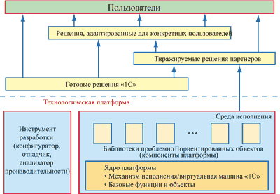
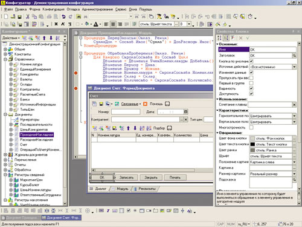

Андрей Колесов
Как мы уже сообщали в "Хронике событий" ("BYTE/Россия" № 8'2002), в середине августа нынешнего года компания "1С" объявила о выпуске ознакомительного варианта новой, восьмой версии платформы "1С:Предприятие". Это событие можно со всеми основаниями считать одним из весьма значительных для российского ИТ-рынка: экономическими программами линейки "1C" в той или иной мере пользуются порядка 80% отечественных предприятий, их внедрением занимаются почти 2500 партнеров-франчайзи в России и странах СНГ. Новый вариант платформы должны определить возможности развития этой системы на несколько лет вперед (предыдущая версия, "1С:Предприятие 7.0", появилась летом 1996 г. и продолжает оставаться базовой для пользователей).
Однако тут сразу нужно подчеркнуть важную деталь: интересы пользователей само по себе появление ознакомительной версии 8.0 затрагивает не очень сильно. Версия "1С:Предприятие 7.7" будет оставаться базовой платформой еще достаточно долго, реальный переход на новую платформу пойдет эволюционно в течение 2-3 лет.
А вот для технических специалистов, занимающихся внедрением, разработкой и сопровождением систем на базе "1С:Предприятие" (как фирм-партнеров, так и ИТ-подразделений предприятий), ознакомление с будущими возможностями системы - актуальная задача уже сегодня. И это было очень хорошо видно на партнерском семинаре фирмы "1С", прошедшем в середине сентября в московской гостинице "Космос", где новая система была впервые представлена широкой аудитории, состоявшей из представителей компаний-франчайзи: в 9:00 в воскресенье зал на 1000 мест был переполнен - специалисты собрались посмотреть презентацию новой версии, подготовленную группой разработчиков во главе с ее руководителем Сергеем Нуралиевым.
Что такое "предварительная версия"
Прежде чем говорить о перспективе перехода на новую версию платформы, нужно кратко напомнить основные принципы реализации версии 7.x, которые в принципе остались неизменными и в новом варианте (подробнее об этом см. статью "1С:Предприятие" - платформа создания информационных систем", "BYTE/Россия" № 9'2002).
Для широкой массы пользователей "1С:Предприятие" - это прежде всего набор готовых прикладных решений. Однако на самом деле эта система представляет собой в первую очередь технологическую платформу, на базе которой сама "1С" и ее многочисленные партнеры разрабатывают прикладные программы. В общем виде структура платформы изображена на рис. 1. Здесь следует обратить внимание на иерархию прикладных решений. На практике программы, с которыми чаще всего работают пользователи, подвергаются той или иной настройке или доработке (в том числе на уровне программного кода). Но при этом данные программы (это относится и к тиражным решениям партнеров), как правило, реализованы на базе готовых конфигураций, созданных разработчиками "1С". Разработка новых приложений "с нуля" выполняется лишь в совершенно исключительных случаях, для решения каких-то качественно новых задач.
|  |
| Рис. 1. Структура платформы "1С:Предприятие".
|
Говоря о технологической платформе, нужно подчеркнуть два важных момента.
Во-первых, руководство "1С" не позиционирует платформу (в том числе и среду разработки) в качестве самостоятельного продукта и не планирует этого делать. Она поставляется только в составе готовых решений для пользователя - примерно так же, как продукт VBA доступен только в виде составной части приложений Microsoft Office.
Во-вторых, платформа позиционируется как средство решения специализированных задач (в первую очередь учетных), разработчики не претендуют на ее преобразование в универсальный инструмент разработки вроде VB или Delphi. В то же время ее реализация непосредственно определяется выбранной бизнес-моделью рыночной деятельности фирмы "1С".
С учетом сказанного давайте определимся, что же собой представляет ознакомительная версия "1С:Предприятие 8.0". Фактически она сегодня реализует уровень ядра системы (базовые функции и механизм исполнения) с минимальным набором специализированных объектов, а также среду разработки. Официальная позиция "1С" по этому поводу звучит следующим образом: сейчас ознакомительная версия распространяется только среди партнеров фирмы "1С" и предназначена для изучения архитектурных и технологических особенностей "1С:Предприятия 8.0". В ознакомительный вариант включена функциональность, соответствующая набору объектов "Оперативный учет" версии 7.7, за исключением некоторых возможностей, перечень которых содержится в комплекте поставки. В продукте поддерживается работа как с файловым, так и с клиент-серверным вариантом информационной базы. В комплект поставки включена демонстрационная конфигурация, иллюстрирующая возможности системы и приемы конфигурирования. Эта конфигурация не является прикладным решением, предназначенным для реального ведения учета на предприятии. Партнерам не рекомендуется начинать на ее базе реальные разработки, так как некоторые функции могут в дальнейшем изменяться.
Действительно, нынешний этап в жизни "1С:Предприятие 8.0" можно определить как раннюю стадию предварительного технического ознакомления (Technical Preview). На прошедшем партнерском семинаре особо подчеркивалось, что сейчас еще окончательно не определены не только многие спецификации, но и планы реализации системы.
Впрочем, было объявлено, что бета-версия системы появится в начале 2003 г. В ней, по-видимому, определится состав специализированных объектов и будут реализованы готовые решения (конфигурации) "первой очереди". "Коробочные" продукты, предназначенные для продажи пользователям, скорее всего, появятся к лету следующего года.
Зачем нужна новая платформа?
В общем виде ответ на вопрос заключается в том, что платформа версии 7.x полностью реализовала возможности развития программных систем в условиях быстро изменяющихся требований рынка и целевых задач фирмы "1С". Что же произошло за шесть лет с момента ее выхода?
Во-первых, возросли требования заказчиков к масштабируемости систем (объем данных, количество рабочих мест, число транзакций). Во-вторых, расширился спектр решаемых задач автоматизации деятельности предприятий. В-третьих, существенно повысились требования к адаптации системы в соответствии с конкретными нуждами заказчика, а также к качеству разработки, внедрения и сопровождения. В-четвертых, расширилась география применения систем, в-пятых, появились качественно новые базовые технологии (Интернет, мобильные устройства и т. п.).
Обратите внимание, что приведенные выше слова об изменении рыночных требований относятся и к процессу развития информационных технологий в целом. Поэтому, чтобы лучше понять, на какие задачи нацеливается версия 8.0, можно провести небольшой ретроспективный анализ.
1992-1996 гг. Основной продукт компании "1С" - "1С:Бухгалтерия". Клиенты - частные предприниматели и малые предприятия. Круг задач ограничен только бухгалтерией. Сеть распространения - дилеры, продажа коробок с минимальными услугами по доработке, адаптации и сопровождению.
1996-2002 гг. Семейство продуктов "1С:Предприятие" 7.x. Клиенты - те же, что и раньше, плюс средние предприятия. Ориентация - на широкий круг учетных задач предприятия. На смену дилерам пришли франчайзи, на которых фактически возложены задачи системных интеграторов. Существенно растет доля услуг по доработке и адаптации систем. Наличие большого числа тиражируемых решений партнеров.
Представители "1С" традиционно придерживаются тактики очень осторожных, я бы даже сказал, заниженных оценок при позиционировании своих продуктов. Упреки в адрес компании по этому поводу довольно часто звучат на партнерских семинарах, на что команда Бориса Нуралиева, возглавляющего "1С", резонно отвечает, что качество и возможности продуктов нужно показывать не маркетинговыми методами, а конкретной работой по реализации проектов. Когда речь заходила о спектре клиентов версии 7.x, всегда подчеркивалось, что система ориентирована на малые предприятия, а состоявшееся де-факто повышение "статуса" системы как инструмента для средних организаций - это выбор самих пользователей. И для новой платформы ставится задача закрепиться на этом уровне, обеспечив адекватную масштабируемость.
Но всем известно, что "закрепляются" на новой территории для того, чтобы потом начать новое наступление. Не говоря уже о том, что понятие "средние" весьма растяжимо (по западным стандартам, у нас абсолютное большинство предприятий не выходит за его пределы). При этом нет никакого сомнения в том, что "1С" сохранит ориентацию и на начальный уровень массовых решений (начиная от домашних пользователей).
Точно так же "1С" всегда говорила об использовании своих технологий для решения исключительно учетных задач, избегая слов "управление" и "ERP", хотя имеется немало реализованных проектов и типовых решений, выходящих далеко за пределы учета. На последних партнерских семинарах Борис Нуралиев осторожно, но вполне определенно высказал намерение перейти к комплексным системам управления предприятием. При этом упоминались (но без конкретных сроков реализации) такие понятия, как планирование, бюджетирование, CRM и даже документооборот.
Отдельно нужно сказать о партнерской сети. Развитие бизнеса "1С" в области экономических задач требует существенного повышения качества и эффективности разработки и внедрения пользовательских решений. Для решения этой проблемы требуется правильное сочетание технологических и организационных методов. Работа в этом направлении ведется - уже второй год идет процесс внедрения у партнеров систем качества, нынешним летом начата новая программа "1С:Консалтинг", что позволит перейти к созданию новой категории партнеров-консультантов. Вместе с тем можно с уверенностью предположить, что переход на новую платформу будет сопровождаться также реструктуризацией самой сети системных интеграторов.
Что нового в версии 8.0?
Теперь посмотрим на ключевые новшества новой версии именно с точки зрения проблем развития (разумеется, предложенная категоризация новых функций достаточно условна).
Масштабируемость и производительность
Прежде всего речь пойдет о повышении масштабируемости и производительности. В новой версии использована трехуровневая архитектура клиент-сервер. В "1С:Предприятии 7.7" был реализован клиент-серверный вариант, но он был двухзвенным, клиентская программа обращалась непосредственно к базе данных. Причем даже в этой конфигурации возможности Microsoft SQL Server использовались далеко не в полной мере - слишком большие ограничения накладывала архитектура, базирующаяся на файл-серверной организации с заметным наследием однопользовательских систем.
В версии 8.0 на одном из компьютеров работает сервер "1С:Предприятие", с которым непосредственно взаимодействует клиентская программа. Сервер обеспечивает доступ пользователей к конфигурации и базе данных Microsoft SQL Server, а также объемные операции с данными. Например, при выполнении даже весьма сложной выборки данных программа, работающая у пользователя, будет получать только необходимую ей выборку, а вся промежуточная обработка будет выполняться на сервере. Физически сервер "1С:Предприятия" и Microsoft SQL Server могут располагаться как на одном компьютере, так и на разных, что позволяет администратору при необходимости перераспределять нагрузку между серверами.
В то же время в версии 8.0 реализован модернизированный вариант персональной базы данных (не использующий сервер "1С:Предприятия" и Microsoft SQL Server) для работы небольшой группы в локальной сети или в индивидуальном применении.
Еще одним аспект повышения производительности - это параллельность. При выполнении регламентных операций исключены ситуации, предполагающие обязательное использование монопольного режима. В новой версии монопольный режим при запуске системы не устанавливается. Механизмы оперативного учета здесь не предписывают единый для всех участков учета регламент работы. Они могут поддерживаться, например, параллельно с участками планирования и другими прикладными подсистемами, работа с которыми не ведется в реальном времени.
В отличие от версии 7.х, в новой системе модель данных предусматривает конкурентный доступ к таблицам БД только при обращении к логически связанным данным и не будет затрагивать данные, не связанные между собой с точки зрения предметной области.
Как и в версии 7.x, в новой платформе поддерживаются две модели доступа к данным - табличная и объектная. В 8.0 особенно значительно модернизирован второй вариант, прежде всего оптимизировано использование возможностей Microsoft SQL Server, в том числе для вычислений и составления отчетов. Существенно переработан механизм запросов, в котором задействована большая часть возможностей, поддерживаемых языком SQL, в том числе объединения, соединения, вложенные запросы. Вместе с тем новый язык запросов поддерживает целый ряд специфических конструкций, ориентированных на работу с моделью данных "1С:Предприятия". К ним относятся: разыменование ссылочных полей, обращение к табличным частям объектов как к вложенным таблицам, построение итогов с учетом предметного смысла суммируемой информации, группировка и построение итогов с учетом иерархии данных, автоматическое упорядочение для построения отчетов, виртуальные таблицы, предоставляющие данные для решения типовых учетных задач, и т. д. В новой версии реализовано несколько способов работы с результатами запроса, включая иерархический и прямой обход, поиск и выборку по значению полей, получение нескольких выборок по результату запроса.
Повышение надежности
Для обеспечения целостности данных как в файловом, так и в клиент-серверном варианте конфигурация, БД и административная информация более тесно интегрированы с точки зрения хранения и модификации. В файловом варианте все данные системы располагаются в одном файле, что обеспечивает более высокую целостность и упрощает создание резервных копий.
Далее, в новой версии введено деление средств управления правами на интерактивные и низкоуровневые. Интерактивные средства, как и в предыдущих версиях, позволяют закрыть доступ к некоторым функциям системы для определенных категорий пользователей с помощью стандартных средств пользовательского интерфейса. Низкоуровневые средства позволяют запретить доступ пользователей к определенным режимам или данным, независимо от того, каким способом выполняется обращение. Новый механизм администрирования позволяет задавать для одного пользователя несколько ролей - учтена возможность совмещения сотрудниками организации нескольких должностей.
Расширение области применения платформы
Архитектура платформы 7.x была ориентирована в первую очередь на решение учетных задач, хотя в реальности система уже давно вышла за эти рамки: практика ее применения включает решения для маркетинга, управления предприятием, бюджетирования. В новой версии это расширение сферы применения платформы закреплено на архитектурном уровне, прежде всего в объектной модели.
Так, механизм табличных частей (вложенных таблиц) в новой версии доступен как для документов, так и для справочников. Число табличных частей, подчиненных одному объекту, не ограничено. Это позволит создавать более сложные документы, всесторонне отражающие различные аспекты хозяйственной операции, для таких направлений, как, скажем, производственный учет. Дальнейшее развитие получил механизм учета наличия и движения средств. Обеспечена большая независимость различных направлений учета, что, в частности, позволит лучше совмещать в одном прикладном решении задачи оперативного учета и планирования.
В новой версии реализован механизм регистров сведений. Он позволяет эффективно решать широкий круг задач, связанных с хранением и обработкой информации и выходящих за рамки учета наличия и движения денежных средств или материальных ценностей.
Удобство работы пользователя
В новом пользовательском интерфейсе реализован целый ряд механизмов, призванных повысить эргономичность и эффективность работы пользователя. К ним, например, относится возможность управления окнами с учетом особенности роли пользователя в работе системы. При этом пользователь может управлять размером и поведением отдельных окон, а формы максимально используют доступное пространство для отображения информации. В командный интерфейс включена возможность динамического переключения состава главного меню и командных панелей - это повышает гибкость пользовательского интерфейса прикладных решений, в которых количество функций исчисляется сотнями.
Существенное развитие в новой версии получили механизмы, предназначенные для подготовки экономической и аналитической отчетности с использованием документов со сложной, неоднородной табличной структурой. Расширены возможности редактирования информации непосредственно в печатном бланке, например, при подготовке регламентированной отчетности или при заполнении сложных документов по утвержденной печатной форме. Более мощные возможности заложены и в средства отображения деловой графики, активно используемой в задачах планирования, финансового анализа и бюджетирования.
Изменен дизайн всего пользовательского интерфейса. Любопытно, что он очень похож на дизайн Windows XP, хотя был разработан до появления этой ОС.
Интернационализация
"1С:Предприятие 8.0" использует кодировку Unicode для символьной информации. Это значит, что все текстовые данные (как конфигурации, так и базы данных) могут включать одновременно символы различных языков. Теперь в системе также поддерживаются национальные и региональные особенности представления чисел, дат и времени, правила сортировки и сравнения строк, принятые в большинстве европейских систем. Также поддерживается формирование числа прописью для нескольких языков. Для конкретной информационной базы предоставляется возможность дополнительной настройки представления чисел, дат, времени и логических значений.
Все элементы пользовательского интерфейса (пункты меню, надписи в формах, тексты ячеек табличного документа и т. д.), создаваемые в конфигурации новой системы, могут задаваться на нескольких языках. Список языков определяется непосредственно в конфигурации. Это позволяет разрабатывать конфигурации с многоязычным интерфейсом, при этом для каждого пользователя может быть выбран свой язык интерфейса.
Повышение качества и производительности разработки
Здесь прежде всего речь пойдет о встроенном языке и системе типов. Во встроенный язык "1С" включен ряд новшеств, отражающих современные тенденции построения языков, ориентированных на разработку прикладных решений. Реализована единообразная работа с коллекциями, введено использование системных перечислений, оптимизировано выполнение логических выражений и т. д. Существенно расширены возможности использования массивов, а также введены новые универсальные коллекции: структура, соответствие (map), дерево значений.
Для объектов, имеющих программные модули, теперь можно создавать экспортируемые процедуры, функции и переменные, к которым можно обращаться из других модулей. Предусмотрено создание в конфигурации общих (библиотечных) модулей, процедуры и функции которых доступны во всех модулях конфигурации. Подверглась модификации также система типов данных.
Усовершенствования среды разработки (конфигуратора) коснулись практически всех режимов - управления рабочими окнами, редактора форм, редактора модулей, редактора командного интерфейса, режимов поиска, палитры свойств, Синтакс-помощника и т. д. Отладчик и модуль замера производительности интегрированы в среду разработки (рис. 2).
|  |
| Рис. 2. Новый дизайн среды разработки "1С:Предприятие 8.0".
|
Средства объединения конфигураций в новой версии получили развитие в направлении более тонкой и детальной настройки правил слияния прикладных решений, а также наглядного представления отличий между конфигурациями. Для разработки конфигураций, включающих разнородную функциональность, в новой версии введен механизм подсистем. Он помогает разделить объекты метаданных по решаемым прикладным задачам, а также автоматически формировать фрагменты командного интерфейса или роли пользователей, ориентируясь на принадлежность объекта метаданных к определенной подсистеме.
Однако именно среда разработки вызвала довольно много вопросов у партнеров "1С". Это касалось таких возможностей, как поддержка режимов групповой работы, использование современных CASE-методов проектирования, реализация интеллектуальных редакторов программного кода и т. п. Разработчики "1С", в свою очередь, говорят, что эти задачи не были первоочередными в реализации платформы, но при этом высказывают готовность обсуждать все конкретные предложения и учесть их при развитии системы в будущем.
В заключение обзора новшеств отметим изначальную ориентацию разработчиков "1С" на технологии Microsoft - это касается и ОС, и СУБД. При этом платформа "1С" по-прежнему базируется на архитектуре COM - никаких модных слов, таких, как .NET или Web Services, в описании новой платформы нет.
Сценарии формирования семейства версии 8.0
Как будет проходить переход клиентов от версии 7.x к 8.0? В какой последовательности будут выпускаться готовые пользовательские решения? Представители фирмы "1С" всегда очень осторожно высказываются относительно перспектив модернизации своих продуктов, к тому же планы в отношении "1С:Предприятия 8.0" действительно пока находятся в стадии обсуждения и уточнения. Поэтому приведенные ниже возможные сценарии развития ситуации - это в значительной мере сугубо авторские предположения, которые базируются на собственном понимании бизнеса и технологий фирмы "1С" (обсуждаемые здесь проблемы миграции касаются многих других платформ для создания систем управления предприятиями, особенно использующих программирование для адаптации к конкретным условиям заказчика).
Замена прикладных решений, реализованных на базе текущей версии платформы, займет скорее всего два-три года (только "1С" на сегодня выпустила их около двух десятков). При этом появление новых решений будет выполняться последовательно, а не одновременно.
Решения-бестселлеры (например, "1С:Бухгалтерия") появятся в линейке платформы "1С" совсем не в первую очередь - об этом вполне определенно заявил на прошедшем партнерском семинаре руководитель фирмы Борис Нуралиев. В качестве возможного варианта первоочередных решений на семинаре были названы "Торговый и оперативный учет" и "Управление персоналом".
В целом такая последовательность выпуска полностью соответствует общим принципам при переходе от платформы одного поколения к другому. Тут можно, например, вспомнить о советах Gartner Group относительно .NET - начинать ее практическое освоение нужно с некритичных приложений, чтобы в течение некоторого срока (называются те же два-три года) получить необходимый опыт и дождаться, пока поставщик доведет технологию до "промышленного" состояния (сейчас для системы "1С:Предприятия 8.0" мы наблюдаем лишь переход от лабораторных к опытным испытаниям).
В этой ситуации было бы логично ожидать от разработчиков в первую очередь прикладных решений для качественно новых сфер применения (эта задача была обозначена в качестве перспектив развития бизнеса "1С"). Напомним, что платформа "1С:Предприятия 7.0" в 1996 г. была представлена вариантом "Торговля" - принципиально новым решением для "1С". А замена ключевого в тот момент продукта "Бухгалтерия 6.0" произошла лишь два года спустя. Отметим также, что качество конфигурации "1С:Торговля" за первые два года ее жизни существенно повысилось. Это закономерно для периода становления платформы и освоения ее возможностей разработчиками.
Открытым на сегодня остается вопрос о том, будет ли развиваться семейство решений на базе сегодняшней версии 7.7. На семинаре было осторожно сказано, что не стоит ожидать серьезного функционального расширения существующих ныне приложений ("Бухгалтерия", "Склад", "Торговля" и т. п.). Но в то же время было анонсировано появление в ближайшем будущем новых конфигураций на ее основе.
В любом случае поддержка существующих программ (например, на уровне их постоянной адаптации к изменяющемуся законодательству) будет продолжаться "до последнего пользователя". Отметим, что только сейчас руководство фирмы подняло вопрос о прекращении поддержки "Бухгалтерии для DOS" (продажи ее закончились в 1997 г.), но при этом подтвердило готовность продолжать поддержку версии "Бухгалтерии 6.0 для Windows".
Возможные схемы миграции франчайзи и клиентов
Как будет технически происходить миграция пользователей с платформы 7.x на 8.0? Отвечая на этот вопрос, нужно иметь в виду две проблемы - перенос собственно баз данных и перенос программного кода. Первая выглядит относительно простой, и можно не сомневаться, что разработчики "1С" с ней справятся. Хотя и здесь тоже могут возникнуть трудности, особенно когда речь идет о хранимых процедурах.
Что касается второго вопроса, то, несмотря на сохранение общих принципов внутреннего языка "1С:Предприятия" (который до сих пор так и не получил названия), разработчики четко объявили - автоматического переноса кода не будет, старый код нужно будет адаптировать вручную. Это позиция может показаться слишком жесткой, но на самом деле она честная и соответствует реалиям, когда речь идет о смене платформы. (Не нужно путать смену версий и смену поколения. Во втором случае речь идет об изменении архитектурных принципов. На знакомом всем примере технологий Microsoft смену платформ можно определить так: DOS - Win16 - Win32 - .NET.)
Разработчики "1С" обещают для собственных типовых конфигураций не только выполнить перенос данных, но и точно воспроизвести их функциональность, т. е. для пользователей этих продуктов переход может быть автоматическим (хотя появление проблем представляется весьма вероятным). Но при этом внутренний код полностью переписывается заново!
Все, что в работающих системах написано самими пользователями (или внедренцами), нужно будет переписывать им самим. И отделить в приложениях код "1С" от "пользовательского" может оказаться очень непросто. Скорее всего, для этого будут предложены какие-то автоматические средства, но в целом эта задача станет хорошей проверкой квалификации партнеров, показав, насколько качественно их разработки учитывали возможность будущей смены платформы.